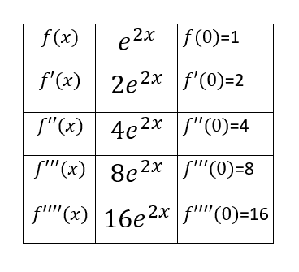

DERET MacLaurin¶
DERET MacLaurin adalah Suatu fungsi f(x) yang memiliki turunan f^{1}(x),f^{2}(x),f^{3}(x) dan seterusnya yang kontinu dalam interval I dengan a, x ∈ I maka untuk x disekitar a yaitu |x-a|< R, f(x) dapat diekspansi kedalam Deret Taylor.
Dalam kasus khusus jika a = 0, maka disebut Deret MacLaurin atau sering disebut Deret Taylor baku. Dan didefinisikan sebagai berikut:
$$ f(x)=f(0)+{f^{1}(0)}x+\frac{f^{2}(0)}{2 !} x^{2}+\frac{f^{3}(0)}{3 !} x^{3}+\frac{f^{4}(0)}{4 !} x^{4} + ...+\frac{f^{n}(0)}{n !} x^{n} $$ Atau bisa dinyatakan dengan:
$$ f(x)=\sum_{n=0}^\infty \frac{f^{(n)}n(0)}{n!}x^{n} $$ Deret MacLaurin sangat bermanfaat dalam metode numerik untuk menghitung atau menghampiri nilai-nilai fungsi yang sudah dihitung secara manual seperti nilai sin x, cos x, eksponensial, dll. Tentu kita tidak akan bisa menghitung nilai-nilai fungsi tersebut tanpa menggunakan bantuan kalkulator atau tabel. Dalam tulisan ini saya akan mencoba untuk mendekati fungsi-fungsi tersebut menggunakan Deret MacLaurin.
Tugas¶
Hitunglah e^{2x} untuk nilai x = 4, hingga error < 0,001
Penyelesaian¶
Fungsi awal exponen : $$ f(x) = e^{2x}\ $$ Dapat juga didefinisikan dengan rumus : $$ e^{2x} = \sum_{n=0}^\infty \frac{(2x)^n}{n!} = \sum_{n=0}^\infty (2)^n\frac{x^n}{n!} $$ Tabel perhitungan untuk turunan exponensial :

Berikut adalah penyelesaian untuk mencari nilai expansi : $$ f(x)=f(0)+{f^{1}(0)}x+\frac{f^{2}(0)}{2 !} x^{2}+\frac{f^{3}(0)}{3 !} x^{3}+\frac{f^{4}(0)}{4 !} x^{4} + ...+\frac{f^{n}(0)}{n !} x^{n} $$ nilai turunan pada tabel dimasukkan kedalam rumus sehingga didapatkan seperti ini :
$$ f(x)=1+\frac{2}{1 !} x+\frac{4}{2 !} x^{2}+\frac{8}{3 !} x^{3}+\frac{16}{4 !} x^{4} + ...+\frac{f^{n}(0)}{n !} x^{n} $$ kemudian, nilai x diganti dengan 4 : $$ f(x)=1+\frac{2}{1 !} 4+\frac{4}{2 !} 4^{2}+\frac{8}{3 !} 4^{3}+\frac{16}{4 !} 4^{4} + ...+\frac{f^{n}(0)}{n !} x^{n} $$ perhitungan diatas akan terus berulang hingga nilai selisih mendekati nilai error yang ditentukan yaitu kurang dari 0,001
Listing Program¶
Script
import math
def er(nilaix,selisih,pertama,kedua,stop,perulangan):
while selisih > stop:
f0 = 0
f1 = 0
for i in range(pertama):
f0 += (2**i)*nilaix**i/math.factorial(i)
for j in range(kedua):
f1 += (2**j)*nilaix**j/math.factorial(j)
selisih = f1-f0
pertama+=1
kedua+=1
print("Perulangan ",perulangan," = ",f1," - ",f0," = ",selisih)
perulangan += 1
er(4,1,0,1,0.001,1)
Output
Perulangan 1 = 1.0 - 0 = 1.0
Perulangan 2 = 9.0 - 1.0 = 8.0
Perulangan 3 = 41.0 - 9.0 = 32.0
Perulangan 4 = 126.33333333333333 - 41.0 = 85.33333333333333
Perulangan 5 = 297.0 - 126.33333333333333 = 170.66666666666669
Perulangan 6 = 570.0666666666666 - 297.0 = 273.0666666666666
Perulangan 7 = 934.1555555555556 - 570.0666666666666 = 364.08888888888896
Perulangan 8 = 1350.2571428571428 - 934.1555555555556 = 416.1015873015872
Perulangan 9 = 1766.35873015873 - 1350.2571428571428 = 416.1015873015872
Perulangan 10 = 2136.226807760141 - 1766.35873015873 = 369.8680776014112
Perulangan 11 = 2432.12126984127 - 2136.226807760141 = 295.89446208112895
Perulangan 12 = 2647.317242263909 - 2432.12126984127 = 215.195972422639
Perulangan 13 = 2790.781223879002 - 2647.317242263909 = 143.46398161509296
Perulangan 14 = 2879.0667510267513 - 2790.781223879002 = 88.28552714774924
Perulangan 15 = 2929.515623682608 - 2879.0667510267513 = 50.448872655856576
Perulangan 16 = 2956.4216890990647 - 2929.515623682608 = 26.90606541645684
Perulangan 17 = 2969.874721807293 - 2956.4216890990647 = 13.45303270822842
Perulangan 18 = 2976.2055607288125 - 2969.874721807293 = 6.330838921519444
Perulangan 19 = 2979.0192669161543 - 2976.2055607288125 = 2.8137061873417224
Perulangan 20 = 2980.2039853108245 - 2979.0192669161543 = 1.184718394670199
Perulangan 21 = 2980.6778726686925 - 2980.2039853108245 = 0.47388735786807956
Perulangan 22 = 2980.8584011859757 - 2980.6778726686925 = 0.18052851728316455
Perulangan 23 = 2980.924047919533 - 2980.8584011859757 = 0.06564673355751438
Perulangan 24 = 2980.946881565988 - 2980.924047919533 = 0.022833646454728296
Perulangan 25 = 2980.9544927814727 - 2980.946881565988 = 0.0076112154847578495
Perulangan 26 = 2980.9569283704277 - 2980.9544927814727 = 0.0024355889549951826
Perulangan 27 = 2980.957677782414 - 2980.9569283704277 = 0.0007494119863622473